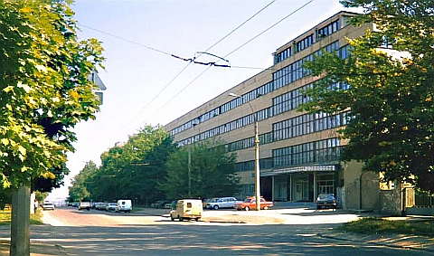

Personal
On these pages, you can find some of my personal projects and information.
CRSE Presentation
In 1990's I was some time collaborating and then emploeed by the Kalmykov Center for Radiophysical Sensing of the Earth (CRSE) of the National Academy of Sciences and National Space Agency of Ukraine - small spin off research organization, which was created at the begining of 1990's on base of Radar Remote Sensing Department of the A.Usikov Institute of Radio Physics and Electronics of the National Academy of Sciences of Ukraine. It's designed and developed airborne multi-frequency synthetic aperture radars and stellite side-looking radars. We also developed algorithms for radar signal and data aquisition, processing and interpretation. Some of results were included in HTML presentation, which I created in 1998. Besides very interesting examples of the interpretation of radar remote sensing data, it was my first experience in web-design. Data processing and visualisation have been done by my colleague Ivan Kalmykov under supervision of dr. Valentin Efimov. - link

History of ...
I'm also collecting materials and publications related to the history of radar, telecommunications and remote sensing. Some of such materials can be found on pages: